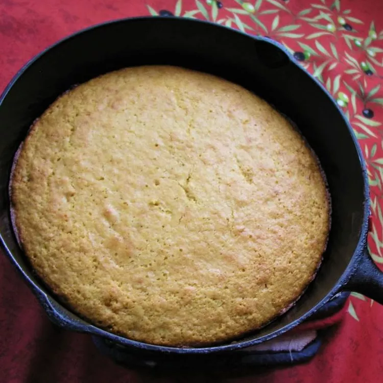

Honey Cornbread

Description
Cornbread is a great accompaniment to any menu. It's a tasty bread option and is good for gathering up juices from stews and gravies. Many African and and Afro-diasporic cuisines use a low-cost starchy item to stretch out meals and gather up gravies from other dishes. West Africa has fufu and garri, East Africa has ugali and injera, and the Carolinas have rice.
Ingredients
- 1 cup all-purpose flour
- 1 cup yellow cornmeal
- ¼ cup white sugar
- 1 tablespoon baking powder
- 1 cup heavy cream
- 2 large eggs, lightly beaten
- ¼ cup vegetable oil
- ¼ cup honey
Directions
- Preheat the oven to 400 degrees F (200 degrees C). Lightly grease a 9x9-inch baking pan.
- Stir together flour, cornmeal, sugar, and baking powder in a large bowl; form a well in the center. Add cream, eggs, oil, and honey; stir until well combined. Pour batter into the prepared baking pan.
- Bake in the preheated oven until a toothpick inserted into the center comes out clean, 20 to 25 minutes.